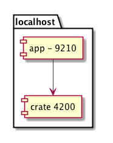
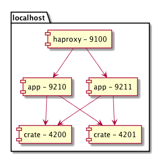
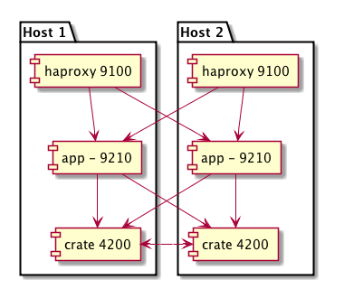

Scalability, Reliability and a Production environment¶
In Setup Your First Application we touched the topology a bit. We also mentioned that you can stop the haproxy and an app instance during development. So the topology you used looked like:

Supervisord starts a haproy, two crate and two app instances. So the topology looks like:

Reliability¶
Within this topology there are two app instances as well as two crate instances. To benefit from this redundancy we have to use the haproxy url in the iOS app. Open the AppDelegate and change the base url in setUpRestKit to:
@"http://localhost:9100"
Now you can simulate a server failure by shutting down an app instance:
bin/supervisorctl stop app:app_9210
The status interface for the HAProxy is available at http://localhost:9100/__haproxy_stats and it shows that the app instance is down. But for all that the iOS app works properly because there is a working app instance left and HAProxy routes all incoming requests to it.
Just as well it’s possible to stop a crate instance:
bin/suervisorctl stop crate:crate_4200
The crate admin interface is available at http://localhost:4201/admin. After stopping the crate instance the cluster state turns yellow but the cluster is still working.
If you start the crate instance again the cluster state turns green:
bin/supervisorctl start "crate:*"
Scalability¶
Extending the crate cluster¶
To extend your local crate cluster open etc/supervisord.conf and increase the numprocs within the crate section:
numprocs=3
Then update the supervisor:
$sh bin/supervisorctl update
crate: stopped
crate: updated process group
Alternatively or additional you can start a new instance in foreground:
$sh parts/crate/bin/crate -f -Des.config=etc/crate.yml
Open the crate admin interface and switch to Cluster. You will see that the new node was added to the cluster:
http://localhost:4200/_plugin/crate-admin/#/cluster
Also add the new node to your app config etc/development.conf and restart the app instances:
crate.hosts = localhost:4200 localhost:4201 localhost:4202
Note
The new node becomes part of the crate cluster anyway, even if you don’t add it to the app configuration. But if the other crate nodes fails out the app server can’t establish a connection to the remaining node.
Adding an app instance¶
To add an app instance edit etc/supervisord.conf and increase the numprocs within the app section:
numprocs=3
Then run supervisor update:
$sh bin/supervisorctl update
app: stopped
app: updated process group
Alternatively you can start a new app instance in foreground:
$sh bin/app http_port=9212
Then you have to add the new instance to the haproxy conf in etc/haproxy.conf:
server ap_ap1_localhost localhost:9210 minconn 5 maxconn 50 check
server ap_ap2_localhost localhost:9211 minconn 5 maxconn 50 check
server ap_ap3_localhost localhost:9212 minconn 5 maxconn 50 check
Restart the haproxy:
bin/supervisorctl restart haproxy
The status interface for the HAProxy shows that the new node was added:
http://localhost:9100/__haproxy_stats
Production Environment¶
The local environment is just a representation of an environment you may use for production. For production you will distribute the app and crate instances to at least two hosts on different physical machines:

Web Server¶
Of course you should not expose the haproxy directly. So add a reverse proxy like nginx:
![[Firewall] as fl
[Load Balancer] as lb
package "Host 1" {
[nginx - 80] as rp1
[app - 9210] as ap1
[haproxy - 9100] as ha1
[crate - 4200] as cr1
}
package "Host 2" {
[nginx - 80] as rp2
[app - 9210] as ap2
[haproxy - 9100] as ha2
[crate - 4200] as cr2
}
fl -> lb
lb --> rp1
lb --> rp2
rp1 --> ha1
rp2 --> ha2
ap1 --> cr1
ap1 --> cr2
ap2 --> cr1
ap2 --> cr2
ha1 --> ap1
ha1 --> ap2
ha2 --> ap2
ha2 --> ap1
cr1 ..> cr2
cr2 ..> cr1](_images/plantuml-6705e1ac4ecd20ba075b2f11420ef6b8705ddedb.png)
Crate Multicast¶
Within etc/crate.yml zen.multicast can be disabled:
path:
logs: ...
data: ...
discovery:
type: zen
zen:
ping:
multicast:
enabled: false
cluster:
name: microblog-dev
If you disable multicast you have to pass the ports and the list of other crate hosts:
parts/crate/bin/crate -f -Des.config=etc/crate.yml -Des.http.port=4202 -Des.discovery.zen.ping.unicast.hosts=localhost:4300 localhost:4301 -Des.transport.tcp.port=4302
We recommend to enable multicast within your production cluster. For development you can disable multicast if you want to prevent your local cluster from connecting with other crate nodes in your network, which may disturb your coworkers.
Extending the production cluster¶
As you can just start new app and crate instances you can add new hosts to your cluster in multiple ways. You can just add a new host with a nginx, haproxy, app and crate:
![[Firewall] as fl
[Load Balancer] as lb
package "Host 1" {
[nginx - 80] as rp1
[app - 9210] as ap1
[haproxy - 9100] as ha1
[crate - 4200] as cr1
}
package "Host 2" {
[nginx - 80] as rp2
[app - 9210] as ap2
[haproxy - 9100] as ha2
[crate - 4200] as cr2
}
package "Host 3" {
[nginx - 80] as rp3
[app - 9210] as ap3
[haproxy - 9100] as ha3
[crate - 4200] as cr3
}
fl -> lb
lb --> rp1
lb --> rp2
lb --> rp3
rp1 --> ha1
rp2 --> ha2
rp3 --> ha3
ap1 --> cr1
ap1 --> cr2
ap1 --> cr3
ap2 --> cr1
ap2 --> cr2
ap2 --> cr3
ap3 --> cr1
ap3 --> cr2
ap3 --> cr3
ha1 --> ap1
ha1 --> ap2
ha1 --> ap3
ha2 --> ap2
ha2 --> ap1
ha2 --> ap3
ha3 --> ap2
ha3 --> ap1
ha3 --> ap3](_images/plantuml-fdb2e2720b736d48a8108f5ed31202bafbf05e73.png)
Alternatively you can distribute the services to different hosts:
![[Firewall] as fl
[Load Balancer] as lb
package "rp host1" {
[nginx - 80] as rp1
[haproxy - 9100] as ha1
}
package "app host1" {
[app - 9210] as ap1
}
package "crate host1" {
[crate - 4200] as cr1
}
package "rp host2" {
[nginx - 80] as rp2
[haproxy - 9100] as ha2
}
package "app host2" {
[app - 9210] as ap2
}
package "crate host2" {
[crate - 4200] as cr2
}
fl -> lb
lb --> rp1
lb --> rp2
rp1 --> ha1
rp2 --> ha2
ap1 --> cr1
ap1 --> cr2
ap2 --> cr1
ap2 --> cr2
ha1 --> ap1
ha1 --> ap2
ha2 --> ap2
ha2 --> ap1
cr1 ..> cr2
cr2 ..> cr1](_images/plantuml-c57305aba0c9ddb041ea9219fa986008532c342d.png)
These are just a few examples for possible setups. You can adapt and combine them to fit your needs.